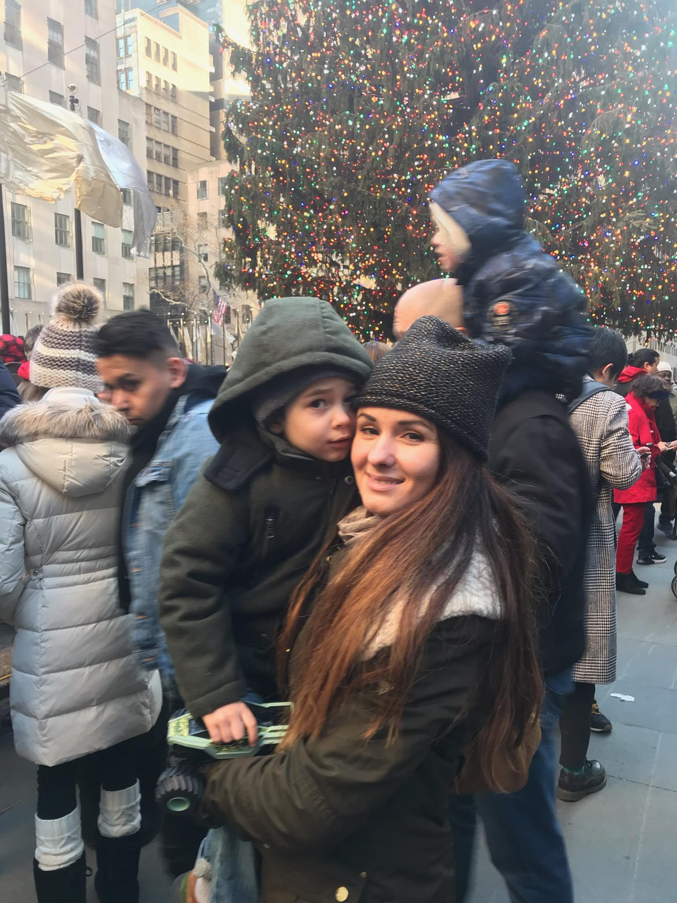

Background
I am a mother who is internationally educated and has a degree in Marketing Management. I have worked as a market reserch analyst, also in the event planning and hospitality field for a few years. I have been a volunteer with NYLAG since 2015 and mostly a stay-home mom since then, occasionally doing freelance jobs. I have always been keen on Technology, looking for the right opportunity to set foot in this industry and craving to learn something new.
Now --> MotherCoders :)
I came across MotherCoders' upcoming class info in NYC and immediatelly felt like this was meant to be. After filling the application out and going throught 2 rounds of interviews, luckily they have chosen me to be one of the mothers in their 2019 NYC Spring Cohort. I am very excited and honored to be part of The MotherCoders’ community and believe the program will give me a very solid base of knowledge and valuable networking and experience, which I need in order to begin my journey as a Woman in Tech. I am grateful that organizations like MotherCoders, Women NYC and Google are working on closing the gap by helping women and mothers advance their careers in a field where we are still very underrepresented.
What's next...?
My career goal is to transition into the Tech field and land a position on a development team. However, in order to achieve that I will need to attend some more classes, learn more coding frameworks and languages. Currently, I am researching which one would be most suitable, convenient and prolific for my plans, goals and lifestyle. Ideally, I will attend one of these classes in the summer and start applying for jobs around the begining of this fall, 2019. Wish me Luck!!!